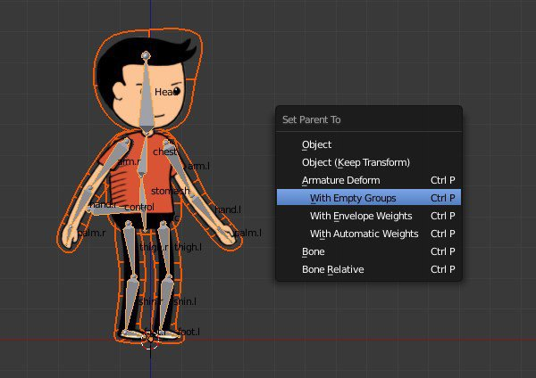
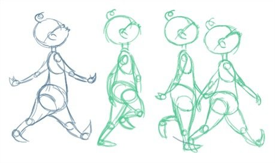

What is this place.
Welcome to the animation info hub. Here you can find out all you want about the many forms of Animation. So why wait around? Click one of th tabs above to learn about one of the biggest art type.

Your toys are alive?!
.......Ok, not really. But with Stop Motion Animation, you can give off the illusion that they are.
 learn more
learn more
2 dimensional puppets?
In a way, yes. much like making your own digital paper puppets.
 learn moreVirtual worlds of your design.
3D Animation is one of the most revolutionary forms of animation that exists today. To the point that it it being used in almost all media around us.
 learn more
learn more
Traditional
Where it all started. Click here to learn about the grandfather of all animation and it's history.
 learn more